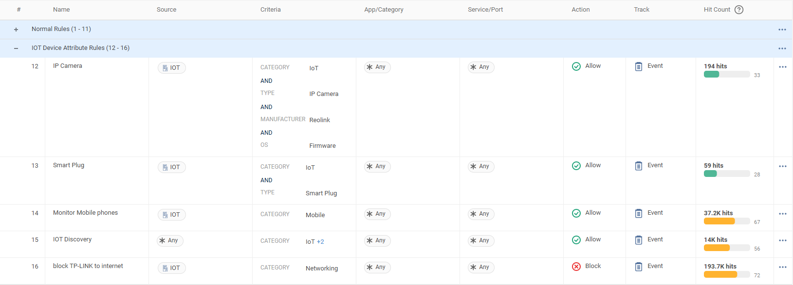

Why this matters
The Data Security and Protection Toolkit (DSPT) is the annual assurance submission for health and care organisations in England. In September 2024 it was rebuilt for large organisations around the NCSC Cyber Assessment Framework — contributing outcomes with achievement levels, replacing the old assertion checklist. The current published edition is DSPT 2026-27 ("version 9"), released 1 September 2026 and aligned to CAF version 4.0 — 49 contributing outcomes, up from 47 in v8 — with a final submission deadline of 30 June 2027 — so most organisations are at the start of a cycle, carrying forward the 2025-26 audit findings and improvement plans into a fresh assessment.
For the generic Cyber Essentials and CAF story — the five CE control themes, the CE-to-Cato mapping, CAF 4.0's objectives A–D and the honest-positioning rules — see the companion page UK Public Sector: Cyber Essentials & NCSC CAF. This page goes deep on what is healthcare-specific: the DSPT's tracks and deadlines, clinical network segmentation, IoMT and legacy device isolation, resilient community connectivity, and supplier access after a supplier compromise became a patient-safety incident.
Two tracks — know which conversation you are in
CAF-aligned track
NHS trusts, Integrated Care Boards, CSUs, DHSC arm's-length bodies, NIS-designated operators of essential services, genomics organisations and Key IT Suppliers. Outcome-based against CAF objectives A–E, with mandatory independent audit (2026-27 scope, current issue dated 1 October 2026: 11 fixed outcomes plus one chosen) and improvement-plan updates due 31 December. This is an evidence-of-outcomes conversation.
Standards-based track
GP practices, care homes, pharmacies, dental practices, opticians and most smaller suppliers still complete the "classic" DSPT against the ten National Data Guardian standards — assertions plus evidence, with GP-specific items such as clinical system access controls. A GP-federation or care-group conversation is still an assertion-and-evidence conversation.
Checked 31 October 2026: DSPT 2026-27 ("version 9") was released on 1 September 2026, aligned to CAF v4.0 (the version-lag against NCSC's August 2025 CAF is closed), with the 30 June 2027 deadline. The v9 overlay has 49 contributing outcomes against v8's 47: A2.b Understanding threat, A4.b Secure software development and support, and C1.f Understanding user and system behaviour, and threat intelligence are new; C2.b Proactive attack discovery is gone (CAF overlay change log, DSPT news post of 2 October 2026). The mandatory-audit scope (re-issued 1 October 2026) is still 11 fixed outcomes plus one chosen (A1b, A3a, B2c, B2d, B3a, B4c, B6a, B6b, C1e, D1c, E4a), and NHS England's reorganised CAF-aligned DSPT audit guidance pages are now live. Version 9 also adds a mandatory Extended Detection and Response (XDR) policy. Next recheck: the 2027-28 edition.
When NHS networks fail, patients feel it
Two public incidents anchor every UK healthcare security conversation — one that made segmentation and patching a board issue, and one that made supplier access a patient-safety issue.
WannaCry May 2017
At least 81 of 236 trusts affected; 6,912 confirmed cancelled appointments (NHS England estimated over 19,000); five A&E departments diverted patients. The NAO's root causes: unpatched or unsupported Windows and poor internet-facing firewall management — "a relatively unsophisticated attack" that basic practice would have prevented.
London pathology ransomware June 2024
Qilin ransomware encrypted Synnovis, the pathology provider for two south-east London trusts. 10,152 outpatient appointments and 1,710 elective procedures postponed; blood testing fell to ~10% of normal, triggering a national O-type blood appeal. A supplier compromise with no lateral containment became a clinical incident.
The first linked death June 2025
A patient-safety investigation at King's College Hospital NHS FT found the cyber attack was one of the contributing factors in a patient's death — a long wait for a blood test result. Widely reported as the first UK case where officials publicly linked a cyber attack to a death. Cyber risk in health is clinical risk.
“If a key supplier were encrypted tonight, which clinical systems keep working — and what could that supplier's credentials reach beyond the one system they support?” · “Could you show an auditor, from live data, which VLANs an unpatched imaging device can reach today?” · “Which of your community and primary-care sites would drop offline if a single circuit failed?”
Where the network evidence lands
The CAF-aligned DSPT assesses outcomes, not products, and the judgment belongs to the independent assessor. The network-shaped anchors sit mainly under Objective B — with monitoring under C and impact under D — and NHS England's August 2023 MFA policy gives B2 an unusually concrete edge: MFA must be enforced on all remote user access to all systems, and on all privileged accounts accessing externally hosted systems. Walk this table the same way as the CE mapping on the public-sector page — the fourth column keeps it credible.
| DSPT anchor | What the assessor looks for | How Cato contributes | What stays with you |
|---|---|---|---|
| B2 — Identity & access control | The NHS MFA policy operating: MFA on all remote access to all systems; privileged accounts to externally hosted systems covered; progress reported through the DSPT. | SSO/MFA sits in the access path for every Cato Client connection — one enforcement point covers remote access to all internal systems, not per-app retrofits. Continuous device-posture checks gate the session; RBAC plus MFA protects CMA administrators. | MFA inside each clinical and cloud application, privileged-account separation, joiner/leaver lifecycle. |
| B3 — Data security | Patient data protected in transit between sites, services and workers. | Encrypted tunnels for every site, cloud and client path by architecture; TLS inspection and DLP over flows carrying patient-identifiable data to the internet and cloud apps. | Data at rest, records management, encryption inside clinical systems. |
| B4 / B5 — System security & resilient networks | Clinical networks segmented from administrative ones; legacy and medical devices isolated; the network resilient by design. | The LAN Firewall enforces east-west segmentation on the Socket per VLAN — clinical, corporate and IoMT estates separated with allow-listed integration flows; IPS virtual patching shields unpatchable devices; multi-link sites and PoP failover replace single-circuit chokepoints. | Device hardening and patching where possible, clinical-safety processes, VLAN design decisions. |
| C1 — Security monitoring | Monitoring that actually covers the estate — hospital, community, primary care, remote. | Every flow from every site and client lands in one event store with one clock; XDR correlates events into incident stories; coverage is architectural, not a log-shipping project. | SOC processes, triage, escalation into clinical incident management. |
| D — Minimising impact | Tested response and recovery; disruption contained before it reaches care delivery. | Segments contain lateral movement; LAN Firewall rules keep enforcing locally on the Socket even if a site's internet fails; incident stories give responders a correlated timeline from minute one. | Incident-response and business-continuity plans, backup and restore, clinical fallback procedures. |
| E — Using & sharing information | The NHS information-governance overlay — appropriate use and sharing of patient data. No CAF equivalent. | Honestly: mostly an IG conversation, not a network one. Cato contributes visibility — CASB and DLP show where patient data actually moves, which supports the IG team's evidence — but does not decide what sharing is appropriate. | Almost everything: IG policy, lawful basis, consent, data-sharing agreements. |
Two more healthcare-specific angles
HSCN and internet-first
HSCN (which replaced N3 by November 2020 — ~12,000 sites migrated) remains fully operational, with no announced successor or retirement date. But the direction since the 2018 Internet First policy is towards internet-delivered services, and NHS England's Networks and Connectivity Programme prioritises off-estate workforce connectivity and network modernisation. Position Cato alongside HSCN circuits for internet-first traffic and new sites — never as "the mandated HSCN replacement"; no such mandate exists.
Suppliers: Cyber Essentials Plus
Under PPN 014, NHS bodies require Cyber Essentials in relevant procurements — and NHS Supply Chain went further in September 2025: in-scope suppliers must demonstrate CE Plus (ISO 27001 is not accepted as an alternative), with existing-supplier reviews from 8 September 2025. If the customer is a supplier to the NHS, the CE mapping is their conversation; Key IT Suppliers also land on the CAF-aligned DSPT track.
Where this sits in the Cato SASE platform
- An acute hospital, a community clinic, a GP-style site and remote clinicians all cross one UK PoP.
- Inside the hospital the LAN Firewall on the Socket blocks IoMT-to-corporate traffic, even if the circuit drops.
- The PoP enforces FWaaS, IPS, ZTNA and DLP on the way to NHS Spine, M365 and SaaS.
- A pathology supplier reaches only named systems over ZTNA; policy, events and devices feed the CMA.
A trust estate, segmented and evidenced
A typical trust estate spans an acute hospital, community clinics, GP-style small sites and thousands of remote and roaming clinicians — plus an IoMT population of infusion pumps, imaging modalities and monitors that cannot run agents and often cannot be patched. Cato treats it as one estate: every site and user crosses the same PoP-enforced policy, and east-west separation inside each site is enforced by the LAN Firewall — a global policy under Security → LAN Firewall, scoped per site and VLAN, enforced on the Socket itself. Because enforcement is local to the Socket, clinical-to-device rules keep working even while a site's internet link is down — segmentation that does not depend on the circuit staying up.
Segmentation enforced at the edge
One global LAN Firewall policy, scoped per site and VLAN, enforced on the Socket — clinical, corporate and IoMT estates separated with allow-listed integration flows, and still enforced if the circuit drops.
See the IoMT estate you actually have
Device Inventory analyses traffic to detect and classify connected devices with ML — the asset picture segmentation (and Objective A) depends on, without deploying agents to devices that cannot take them.
Resilient community & primary care
Small sites run a Socket over broadband with LTE fallback and PoP failover — clinics and GP-style sites inherit the full policy on day one, without waiting on a dedicated circuit.
Evidence as a by-product
Policy, device inventory, events and an attributable Audit Trail in one console — the CAF-aligned DSPT and its independent audit ask for exactly this record.
Say “Cato supports your DSPT work” — never “Cato makes you compliant”. The DSPT is scored across the whole organisation, independent assessors own the judgment, and Objective E belongs to information governance, not the network. For claims about Cato's own certifications, use only the published security, compliance & privacy page.
Typical healthcare policies — a starter rulebase
The mapping table stays at outcome level; this is the layer beneath it — an illustrative starter rulebase a trust or large provider could stand up, then shape to its own estate. It is organised the way a DSPT assessor reasons about a clinical network: clinical access allowed explicitly and posture-checked, medical devices confined to the conversations they clinically need, the corporate estate kept off the clinical VLANs except through named integration flows, and suppliers reaching exactly the system they support. None of it certifies anything on its own; it gives the DSPT conversation something concrete to walk.
These rules are illustrative, not an exported console. Stand every block rule up in monitor mode first, watch hit counts against real traffic — in a hospital, a mis-scoped block can interrupt a clinical integration, so the monitor phase is a patient-safety step, not a formality. Flip to enforce only after clinical engineering and the integration team have reviewed what would have been blocked. VLAN design, device groups and clinical-risk sign-off are the customer's to decide: Cato supports that work; it does not settle it.
| # | Name | Source | App/Category · Destination | Action | Track |
|---|---|---|---|---|---|
| 1 | Clinical staff — clinical systems via ZTNA | Clinical staff (SCIM groups) — device posture required | ZTNA segments — EPR, PACS, pathology results, per-role least privilege | Allow (segment) | Event |
| 2 | IoMT → clinical integration only | IoMT VLAN (LAN Firewall, scoped to hospital sites) | Named integration hosts/ports only — PACS ingest, results interfaces; deny all other east-west | Allow listed · default Block | Event |
| 3 | IoMT — internet egress lock | IoMT VLAN / device groups (Device Inventory attributes) | Only named vendor update/telemetry destinations; deny all other egress | Allow listed · default Block | Event |
| 4 | Corporate → clinical VLANs — deny | Corporate VLAN (LAN Firewall) | Clinical VLANs — blocked except named integration flows (e.g. EPR reporting feeds) | Monitor → Block | Event |
| 5 | Remote clinicians — MFA + posture | All remote users (Cato Client) | All internal systems — SSO/MFA in the access path, posture profile required (the NHS MFA policy's "all remote access") | Allow (posture) | Event |
| 6 | Supplier — named system, time-boxed | Supplier group (e.g. pathology / imaging vendor) | ZTNA segment — the one system they support; nothing else routes | Allow (segment) | Event |
| 7 | Legacy modality servers — virtual patching | Legacy clinical hosts (host group) | IPS — CVE signatures shielding unpatchable systems while replacement is planned | Monitor → Protect | Event |
| 8 | Patient & guest Wi-Fi — internet-only | Guest network (segment / VLAN) | Internet-only egress, filtered; no route to clinical or corporate segments | Allow (filtered) · Block segments | Event |
Read down the Action column and the DSPT anchors fall out of it: rules 1 and 5 are B2 — access by identity, posture and the MFA policy's remote-access requirement; rules 2–4 and 8 are B4/B5 — the clinical/corporate/IoMT separation an assessor asks to see, enforced on the Socket by rules 2 and 4 so it holds even off-circuit; rule 6 is the supplier-containment lesson of June 2024 written as policy; rule 7 shields the devices that cannot be patched while the replacement programme runs. Every row is tracked as an event — Objective B enforced and Objective C evidenced in the same place.
Healthcare scenarios
- DSPT submission and independent audit. When the auditor arrives, walk this rulebase as the evidence: Device Inventory is the asset picture, the LAN Firewall policy is the segmentation claim as configured, events show rules 2–4 firing on real traffic, and the Audit Trail shows who changed what and when. One console answers the contributing-outcome questions instead of a screenshot hunt across clinical engineering, network and security teams.
- An imaging vendor needs remote access this week. Stand up rule 6 for the vendor's engineers: a ZTNA segment scoped to the one modality management server, MFA in the path, every session evented. When the work finishes, remove the group — the Audit Trail records both ends. The June 2024 pathology incident is the reference point: a supplier compromise must not become a trust-wide one.
- Ransomware lands in the corporate estate. A phished back-office laptop starts scanning. Rule 4's corporate-to-clinical block confines it at the Socket — EPR and PACS stay reachable to clinicians while the corporate VLAN is triaged — and because the LAN Firewall enforces locally, containment holds even if responders isolate the site's internet links. The event stream gives the incident team the scan attempts in real time.
- A new community clinic opens in weeks, not months. Ship an X1600, connect broadband and LTE, and the site inherits the global policy on day one — clinical VLAN separation, MFA'd remote access, filtered patient Wi-Fi — with no dedicated circuit on the critical path. The same pattern covers vaccination sites and pop-up diagnostic hubs, and aligns with the internet-first direction of travel.
How to run the demo
Ask which DSPT track they are on — CAF-aligned (trust, ICB, CSU, ALB, Key IT Supplier) or standards-based (GP federation, care group) — when their next submission or audit lands, and which finding from the last cycle still stings. Anchor every screen to that answer.
-
Frame with the DSPT mapping
Walk the mapping table above, including the “what stays with you” column — and concede Objective E to information governance up front. Agreeing what Cato does not cover buys the credibility for the segmentation story that follows.
-
Show the devices you did not know about
Assets → Device Inventory
Open the inventory and filter to a hospital site: devices detected and classified from traffic analysis — no agents. This is the asset picture that segmentation, and the DSPT's asset-management outcomes, depend on. “Which of these did clinical engineering know were on this VLAN?”
-
Segment the clinical estate with the LAN Firewall
Security → LAN Firewall
Show the global policy and how each rule is scoped per site and VLAN yet enforced on the Socket. Walk rules 2–4 of the blueprint: IoMT confined to named integration flows, corporate blocked from clinical. Land the differentiator: enforcement is local, so the segmentation holds even if the site loses its internet links.
-
MFA and posture on every remote path
Access → Device Posture
Open a posture profile and show it gating a remote clinician's session continuously — then connect it to the NHS MFA policy: one enforcement point puts MFA in front of all remote access to all systems, which is exactly how the policy is worded.
-
Give a supplier exactly one system
Security → WAN Firewall
Show the supplier group's rule: allowed to its named system segment, everything else falling to the implicit deny. Log in as a supplier user (say, Priya from the imaging vendor), reach the permitted system, attempt another — then show the block. This is the third-party lesson of June 2024, live.
-
Close on the audit pack
Monitor → Events · Administration → Audit Trail
Filter events to the supplier's identity and to the LAN Firewall blocks, then open the Audit Trail: policy, enforcement and change history from one console. “This is the contributing-outcome evidence assembling itself as a by-product of operation.”
How to prove it in the customer's tenant
The demo walks the mapping table in our tenant; the PoV is a trust pilot that produces CAF-aligned DSPT evidence from theirs — one acute hospital site, one agreed IoMT VLAN, one supplier cohort, one resilience drill, and every artefact filed against a row of the mapping table above. Agree the criteria below before configuring anything, per Running a Cato PoV. One rule stands above the framework, and it is stricter here than in any factory: this network carries patient care. The clinical golden rule mirrors the OT segmentation PoV and then tightens it — nothing blocks anything without the clinical engineering lead's written sign-off, and wherever patient-care systems are involved the pilot stays monitor-only for the duration. Monitor-first is not PoV hygiene in a hospital; it is the patient-safety posture the whole engagement is built on.
| Success criterion | What we demonstrate | Evidence artefact | Where in the CMA |
|---|---|---|---|
| Legacy & IoMT exposure quantified — the WannaCry lesson as a number | Device Inventory classifies the pilot hospital site's connected devices agentlessly from traffic; filtered by OS, it shows how many devices run unsupported operating systems and which VLANs they sit on | Dated inventory extract for the pilot site with the unsupported-OS count — the NAO's root cause, live in this estate, as evidence rather than fear | Assets → Device Inventory |
| Clinical / IoMT / corporate separation demonstrated — monitor-first | One agreed IoMT VLAN comes under the LAN Firewall with a catch-all Allow · Event rule; a week of events maps its east-west conversations with the clinical and corporate VLANs, and the rulebase that would enforce the separation is built against that map | The rulebase, the written flow map signed by clinical engineering, and attributed east-west events — plus, only if signed off, one blocked non-patient-care flow | Security → LAN Firewall · Monitor → Events |
| One supplier on least-privilege ZTNA | A pathology or equipment-vendor archetype cohort reaches exactly the system it maintains; an attempted reach to anything else lands as a block event attributed to a named person, not a shared VPN account | Paired allow and block events for one vendor engineer, per the evidence pattern of the supplier-access PoV | Monitor → Events · Security → WAN Firewall |
| Community resilience shown once | One community-clinic-archetype site (broadband + LTE) survives a pulled primary link in a booked window — a single timed, witnessed drill from the resilience drill card | The drill record: link-state events, the transport shift onto LTE, and the measured recovery time, per the drill card | Monitor → Topology · Monitor → Events |
| Evidence filed on the DSPT rows — shared responsibility intact | Each artefact above is indexed against its outcome row (inventory → B4/B5 asset picture, flow map and rulebase → B4/B5, supplier events → B2, drill → B5/D, event coverage → C1), with the "what stays with you" column read out alongside | The evidence pack indexed by DSPT anchor, plus an Audit Trail export of every change the PoV made — handed to the SIRO / DSPT owner | Administration → Audit Trail |
| No clinical disruption (the golden rule) | Zero unagreed blocks for the whole pilot; at most one enforcement change, never on a patient-care flow, carrying the clinical engineering lead's written sign-off and a seconds-fast rollback | The event-log sweep for the pilot window showing no unagreed blocks, plus the signed change record | Monitor → Events · Administration → Audit Trail |
- Licences: Device Inventory requires its own licence (part of the IoT/OT Security offering) for the estate criterion; ZTNA/SDP licences cover the supplier cohort for the pilot period.
- The pilot hospital site: a Socket in path, with the agreed IoMT VLAN defined and its traffic actually traversing the Socket — devices whose traffic never crosses the Socket are invisible to both the inventory and the LAN Firewall.
- Socket versions: the LAN Firewall is supported from Socket v22 (LAN Firewall KB); device-attribute criteria need v26 or higher (policy KB). Check before the plan promises a device-attribute rule.
- A named clinical engineering lead with authority: the person who owns the IoMT estate, reads the flow map, and signs — or refuses — the one candidate block. No sign-off, no block: a criterion, not a courtesy. Patient-care flows are not candidates at all.
- Supplier cohort in identity first: the vendor's engineers exist in the customer's IdP as a dedicated SCIM-provisioned group before any policy references them — the supplier-access PoV owns the detail.
- Change windows booked with ward realities in mind — see troubleshooting: a 24/7 hospital has no site-wide quiet hour, so windows are negotiated per ward and per modality, not assumed.
- Not needed: TLS inspection or a client rollout — segmentation is enforced on the Socket and the supplier slice is access-level. If the customer adds patient-data DLP criteria, that is a scope trade agreed at the workshop, and TLS inspection stages first per the TLSi playbook.
- Dates: reuse the staleness check in the objective section above before writing DSPT deadlines into the pilot plan — this page deliberately quotes only the published cycle.
Configuration walkthrough — one step per criterion
-
Quantify the estate — turn WannaCry into a count
Assets → Device Inventory
Device Inventory analyses WAN-bound and outbound traffic passively — no agents, which matters in an estate where most devices cannot take one — and classifies each device with ML across attributes including category, type, manufacturer, model, OS and OS version (Device Inventory KB). Filter to the pilot hospital site, sort by OS, and count the devices on unsupported operating systems — then walk the list with clinical engineering: which of these did they know were on that VLAN? Date the extract into the evidence doc. The NAO named unpatched and unsupported Windows as WannaCry's root cause; this artefact is that finding, live, in their own estate.
-
Bring the agreed IoMT VLAN under the LAN Firewall — safely
Security → LAN Firewall
Create a LAN Network rule scoped to the pilot site and the agreed IoMT VLAN. Know what this does: per the KB, a LAN Network rule carries a default ANY-ANY Block as its last child rule — so scoping the VLAN in with no allow rules is itself an act of enforcement. Monitor-first therefore means creating the catch-all in the same change: an Any-Any Allow with Track = Event rule above the default block. Net effect: nothing drops, and every east-west flow touching the IoMT VLAN lands in Events, enforced locally on the Socket. In a hospital, make even this no-op change in a booked window with the clinical engineering lead on the call — the discipline is part of what the PoV is demonstrating.
-
Map the flows with clinical engineering — demonstrate the separation
Monitor → Events
Let the monitor rule run across at least one full clinical week — imaging lists, overnight backups and vendor telemetry windows all generate flows a quiet afternoon will not. Then sit with the clinical engineering lead and write the flow map: which conversations are clinical integrations (modality → PACS ingest, analyser → results interface), which are vendor maintenance paths, and which nobody can explain. Build the named Allow · Event rules above the catch-all from that map — the rulebase is the separation claim, shown against the events that justify every line. If, and only if, the lead signs off one non-patient-care flow (the classic candidate: corporate workstations reaching the IoMT VLAN directly), flip that one rule to Block · Event in an agreed window and prove it from a test host. If no sign-off is given, monitor-only is still a pass — the criterion is separation demonstrated, and the flow map plus the would-be-blocked events carry it.
-
Give one supplier exactly one system
Access → Users Security → WAN Firewall
Run the supplier-access PoV scoped down to one cohort — the pathology or imaging vendor archetype whose engineers maintain a named system. Its walkthrough owns the method: the SCIM-provisioned group, the named-system allow rule, the week-one discovery rule, the leaver test. This pilot needs its headline pair as evidence: the vendor engineer (say, Marcus) reaches the analyser middleware he supports under a named rule, attempts anything else, and the block lands attributed to him personally. The page's June 2024 incident framing has already made the argument; the paired events make it in the customer's own tenant.
-
Show community resilience once
Monitor → Topology Monitor → Events
One drill, one site, one booked window: on a community-clinic-archetype site running broadband with LTE fallback, pull the primary link and watch the transport shift while a timestamped ping and a witness record the gap. The resilience drill card owns the expected behaviour per the KB, the timing method and the rollback — run its D1 (or D2) exactly as written. This PoV needs precisely one drill: enough to evidence the resilient-networks row without turning a compliance pilot into a resilience programme.
-
File the evidence on the DSPT rows and close the golden rule
Monitor → Events Administration → Audit Trail
Sweep the pilot window's events with the clinical engineering lead: every block matches the one signed change (or there were none), and no clinical flow was dropped unexplained — the golden-rule criterion closes on that sweep. Then index the pack against the mapping table: inventory extract to B4/B5's asset picture, flow map and rulebase to B4/B5, supplier events to B2, the drill record to B5 and D, the one event store that captured all of it to C1 — and read out the "what stays with you" column beside each row. The pack informs the submission; the submission, and the achievement-level judgment, stay with the organisation's SIRO / DSPT owner and their independent assessor. Cato's contribution is that the evidence now exists as a by-product of operation rather than a screenshot hunt.
What good output looks like
Three exhibits carry the wrap-up: the dated inventory extract with its unsupported-OS count; the IoMT rulebase beside the flow map that justified every line; and the supplier's paired allow-and-block events. The rulebases below show the destination shape each of the first two is heading for.



Troubleshooting
IoMT devices invisible to the inventory
Detection is passive analysis of WAN-bound and outbound traffic — a modality that only ever talks inside its own VLAN, or hangs off an isolated switch stack that never crosses the Socket, generates nothing to classify. Check whether its traffic traverses the Socket; if it cannot, record the blind spot honestly in the estate criterion rather than quietly narrowing it.
A device appears but with no OS or attributes
The KB is explicit that not every data field is available for every device, and devices behind an L3 boundary present the router's MAC, not their own. Count such devices as unknown, never as unsupported — the exposure number survives audit scrutiny only if its unknowns are labelled as unknowns.
The clinical network is flatter than anyone admitted
If pumps, PCs and PACS share one broadcast domain, there is no IoMT VLAN boundary for the LAN Firewall to scope to. The pilot then starts one step earlier: use the inventory to identify which devices belong in an IoMT VLAN for one ward or modality group, and let the flow evidence justify creating it — that finding is itself DSPT-relevant evidence.
No change window exists in a 24/7 ward
A hospital has no site-wide quiet hour. Monitor-first helps — most of this pilot's steps change nothing — but book windows anyway, negotiated per ward and per modality with clinical engineering (imaging list hours matter more than office hours). The only enforcement change is one rule, reversible in seconds, so the window it needs is minutes, not a weekend.
Expected traffic never appears in LAN Firewall events
Intra-site traffic that matches no LAN rule is treated as WAN traffic and handled at the PoP — check WAN Firewall events for it, then check the LAN Network rule's scope actually covers both VLANs in the conversation. Traffic that never crosses the Socket at all is invisible to both.
The catch-all monitor rule is noisy
By design — but the KB recommends tracking only high-priority LAN rules in steady state, because events add overhead over the tunnel. Keep the catch-all Event rule for the observation window, retire it as named allows take over, and say so in the plan: temporary and deliberate.
Gotchas & clean exit
- The golden rule outranks the runbook. Monitor-only wherever patient-care systems are involved, and no block anywhere without the clinical engineering lead's written sign-off. In a factory a false positive stops a machine; here it can interrupt care. If the lead refuses every block, the PoV still passes on monitor-mode evidence — write the criteria so that is true from day one.
- No compliance verdicts. This pilot produces evidence, not achievement levels. The independent assessor owns the judgment and the DSPT submission stays with the SIRO / DSPT owner — present the pack as "evidence towards B4", never "B4 achieved".
- Not clinical-safety advice. This is a network evidence pilot. Changes affecting clinical systems go through the organisation's own clinical risk management and change processes — the clinical engineering lead's sign-off is this PoV's gate, not a substitute for those processes.
- Scoping a VLAN into the LAN Firewall is not passive: the default ANY-ANY Block under a LAN Network rule means an IoMT VLAN scoped in without its catch-all allow is being enforced immediately. Build the LAN Network rule and the monitor rule as one change, never two.
- One site is one site. The pilot proves the mechanism on one hospital site and one VLAN; trust-wide segmentation is the programme it justifies. The account-level policy means the rollout is the same rulebase re-scoped — say that in the wrap-up, don't imply it happened.
Exit: disable the single block rule (if one was ever signed off) and the site behaves exactly as before; keep or retire the monitor rules as the customer prefers — kept, they are row one of the segmentation rollout and the flow map is its design document. Disable the supplier's pilot rules rather than deleting them (the hit counts and events are the evidence record), and return the drill site to steady state per the drill card's rollback column. Every change made and removed stays recorded in Administration → Audit Trail — the PoV leaves the hospital untouched, and the SIRO holds an evidence pack their last submission cycle had to assemble by hand.
Resources
Documentation
- What is the Socket Next Gen LAN Firewall (KB)
- Managing the Socket Next Gen LAN Firewall Policy (KB)
- What is Device Inventory? (KB)
- Network Segmentation — Best Practices (KB)
- NHS England — CAF-aligned DSPT guidance (objectives A–E)
- NHS England — Multi-factor authentication policy
- DSPT 2026-27 (version 9) — outcomes, assertions and evidence items (updated 2 Oct 2026)
- DSPT Audit 2026-27 — areas of mandatory audit (1 Oct 2026)
- DSPT system changes and release notes (v9, 1 Sept 2026)
- NAO — Investigation: WannaCry and the NHS
- Cato rapid CVE mitigation (virtual patching)
- Cato security, compliance & privacy — published certifications